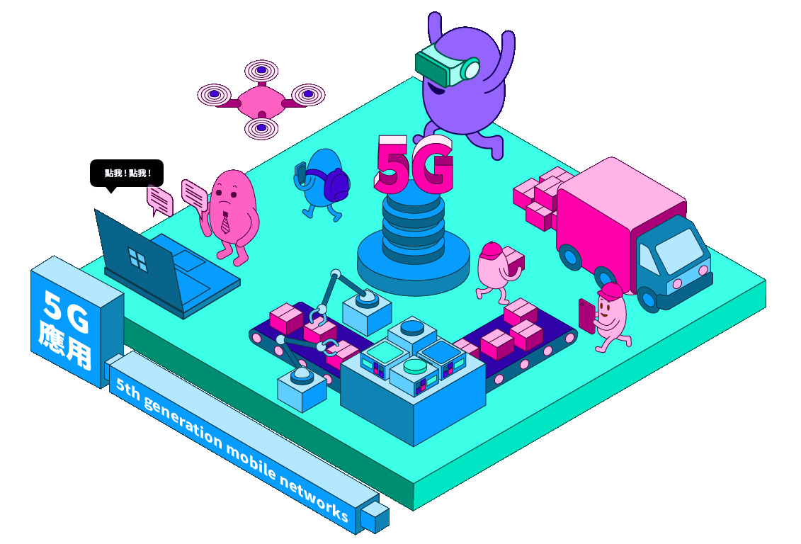

遠端監控

透過5G即時傳輸影像，可從遠端監控駕駛是否有進食、打瞌睡等分心的危險駕駛行為。車上先進駕駛輔助系統（ADAS），也能經過5G和路邊的設備溝通，例如路邊設備偵測到行人未依號誌通行，主動向駕駛示警減速，或是在車輛轉彎時警示用路人，提升行車安全。
※ 點選圖片中的場景，會有意想不到的效果哦
第五代行動通訊技術（英語：5th generation mobile networks或5th generation wireless systems，簡稱5G）是最新一代行動通訊技術，為4G（LTE-A、WiMAX-A）系統後的演進。5G的效能目標是高資料速率、減少延遲、節省能源、降低成本、提高系統容量和大規模裝置連接。5G網路是數位訊號蜂巢式網路，在這種網路中，營運商覆蓋的服務區域被劃分為許多被稱為蜂窩的小地理區域。表示聲音和圖像的類比訊號在手機中被數位化，由模數轉換器轉換並作為位元流傳輸。5G的高資料傳輸速率和低延遲被認為在不久的將來會有新的用途。一種應用是實際的虛擬實境和擴增實境。另一種應用是物聯網中快速的機器對機器的互動。例如，道路上車輛中的電腦可以通過5G連續不斷地相互通訊，也可以連續不斷地與道路通訊。
※ 本轉載之影片內容均用於非商業用途。純粹為教育、非營利等合法目的，而影片之之著作權、所有權與智慧財產權，包括內容、文字、圖片、聲音、影像等均為台北金融研究發展基金會所有。